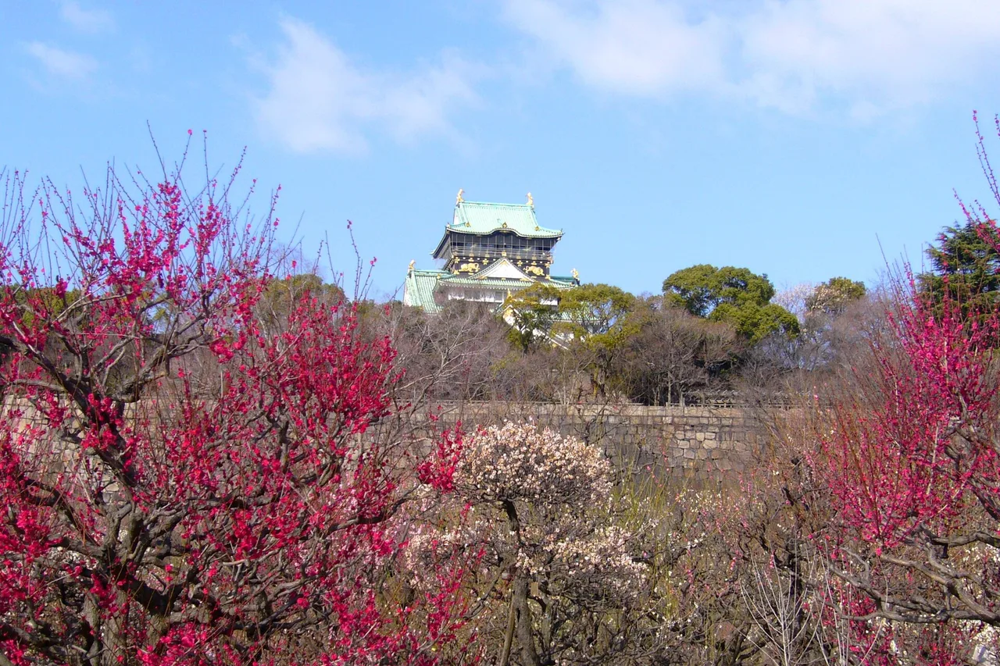

คู่มือท่องเที่ยว Osaka สำหรับผู้เรียนภาษาญี่ปุ่น
เมืองหลวงอาหารสุดเป็นกันเองของญี่ปุ่น — Dōtonbori แสงนีออน ของกินริมทางไม่รู้จบ ความบันเทิง และสำเนียงอันอบอุ่นเป็นกันเองที่โด่งดัง

Osaka คือเมืองที่ญี่ปุ่นผ่อนคลายตัวเอง ผู้คนพูดคุยเป็นกันเองมากกว่า อาหารเรียบง่ายแต่อร่อยเหลือเชื่อ และคติประจำเมืองอาจเป็น "kuidaore" — กินจนล้มพับ นอกจากนี้ยังเป็นฐานที่ดีเยี่ยมสำหรับเดินทางไป Kyoto, Nara และ Kobe ซึ่งอยู่ห่างออกไปไม่ถึงหนึ่งชั่วโมง
การเดินทางในเมือง
Osaka Metro บวกกับ JR Loop Line ครอบคลุมทั่วเมือง การใช้บัตร ICOCA ทำให้สะดวกสบายมาก ผู้มาเยือนครั้งแรกส่วนใหญ่พักแถว Namba (ทางใต้) หรือ Umeda (ทางเหนือ) — ทั้งสองแห่งเป็นศูนย์กลางการเดินทางที่มีทุกอย่างอยู่ในระยะเดินเท้า
ลิงก์บางส่วนด้านบนเป็นลิงก์พันธมิตร เราอาจได้รับค่าคอมมิชชันโดยไม่มีค่าใช้จ่ายเพิ่มเติมสำหรับคุณ เราแสดงเฉพาะบริการที่เราจะใช้เองเท่านั้น
สิ่งที่ควรดู
- Dōtonbori — คลองแสงนีออน ป้าย Glico running man และอาหารริมทางจนดึก
- Osaka Castle — ปราสาทสร้างใหม่สไตล์ศตวรรษที่ 16 ในสวนขนาดใหญ่ สวยงามในช่วงดอกซากุระบาน
- Shinsekai & Tsūtenkaku — Osaka ยุคหลังสงครามสไตล์เรโทร บ้านเกิดของ kushikatsu
- Umeda Sky Building — หอดูดาวสวนลอยฟ้าพร้อมวิวพระอาทิตย์ตก
สิ่งที่ควรกิน
นี่คือไฮไลต์หลัก: takoyaki (ลูกชิ้นปลาหมึก), okonomiyaki (แพนเค้กรสเค็ม), kushikatsu (ของทอดเสียบไม้ — ห้ามจุ่มซอสซ้ำเด็ดขาด!) และ kitsune udon กินยืน กินบ่อยๆ
ลิงก์บางส่วนด้านบนเป็นลิงก์พันธมิตร เราอาจได้รับค่าคอมมิชชันโดยไม่มีค่าใช้จ่ายเพิ่มเติมสำหรับคุณ เราแสดงเฉพาะบริการที่เราจะใช้เองเท่านั้น
คำถามที่พบบ่อย
Q. Osaka เป็นฐานที่ดีสำหรับท่องเที่ยวแถบ Kansai ไหม?
A. ใช่ Osaka อยู่ห่างจาก Kyoto, Nara และ Kobe ไม่ถึงหนึ่งชั่วโมง ผู้มาเยือนครั้งแรกส่วนใหญ่พักแถว Namba ทางใต้หรือ Umeda ทางเหนือ ทั้งสองแห่งเป็นศูนย์กลางการเดินทางที่มีทุกอย่างอยู่ในระยะเดินเท้า
Q. Osaka มีชื่อเสียงด้านอาหารอะไร?
A. Osaka คือเมืองหลวงอาหาร kuidaore: takoyaki ลูกชิ้นปลาหมึก, okonomiyaki แพนเค้กรสเค็ม, kushikatsu ของทอดเสียบไม้ (ห้ามจุ่มซอสส่วนกลางซ้ำ) และ kitsune udon
Q. ควรเริ่มดูอะไรก่อนใน Osaka?
A. เริ่มที่ Dotonbori แสงนีออนและป้าย Glico running-man, Osaka Castle ในศตวรรษที่ 16, Shinsekai สไตล์เรโทรพร้อม Tsutenkaku และหอดูดาว Umeda Sky Building ยามพระอาทิตย์ตก